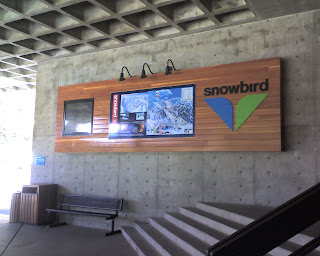

Skip to the record
Threads
The Wayback
Recovered weblog entry
I'm home!
August 30, 2007
/
RyanDavid Burningham

Newer
Peruvian Chairlift
Older
I have fire!
Dig somewhere else
Testing, hoping I didn't break this feed!
Positivity